PhD at MLG (2026), within ARIAC by DigitalWallonia4.ai.
Now postdoc on EDITS: causal discovery in time series.
Not a process engineer, and not a security analyst.
Founded in 2004 by Gianluca Bontempi, co-headed with Tom Lenaerts.
Time series and streaming sensor data, forecasting, anomaly and fraud detection, causal inference.
Enhancing Digital Twins with Scalable and Interpretable AI, funded by the F.R.S.-FNRS WEL-T programme.
Twins of a city's traffic, of a wind farm, of a robotic arm.
The injection molding results of this talk come from ARIAC, on data produced at Sirris, with Olivier Caelen, Marouene Oueslati, Marc Ansay, Pierre Dagnely and Tojo Johanesa.
Simulate a street closure or a change in public transport, and see the impact before deciding.
Real traffic data plus synthetic data.
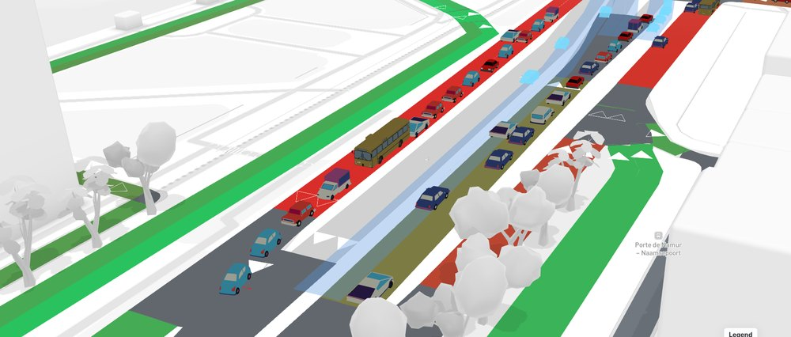
A virtual power plant: forecast solar, consumption and EV charging, then drive the shared battery.
2,400 Belgian meters (Fluvius): up to 14% lower cost.
Drive a robotic hand from muscle signals (EMG): less effort and fewer injuries for the operator.
The twin of the workstation tests what-if scenarios in real time.
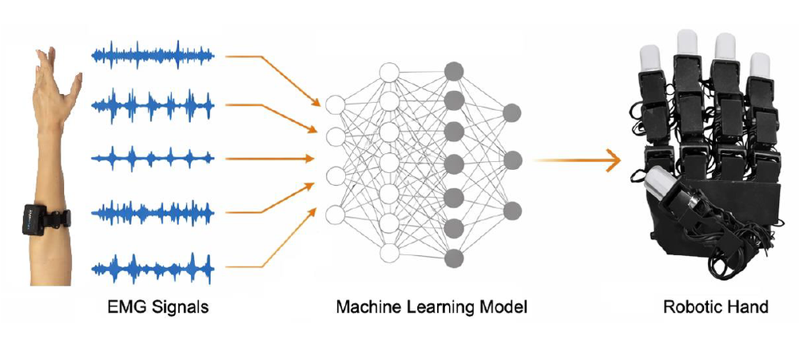
A twin aims to…
1000 parts from the production logs. The granulate was dried for 4 hours or for 2 hours. For each part we know whether it passed quality control.
Looking only at the data: short drying. More good parts, and it saves two hours and energy on every batch.
Illustrative numbers.
…fine. Same parts, split by how the granulate arrived:
Moisture drives both the choice of the drying time and the quality: a confounder.
Which parts got the long drying? (the expensive one)
Which parts got the short drying?
Operators dry for longer when the material arrives humid. The short drying mostly got the easy batches.
Among the parts dried for 2 hours, how many were good?
If I set 2 hours for this batch, will the parts be good?
A twin that learns from these logs recommends 2 hours, also for the humid batches. Which table to trust is decided by the causal graph, not by the data.
Illustrative numbers. The medical original: kidney stones, Charig et al., BMJ, 1986 (Simpson’s paradox).
The agent goes first on the exposed machines: exposure is the confounder.
The logs say: machines with the security agent report more incidents than machines without it.
Among the machines with the agent, how many incidents?
If I install the agent on this machine, will it have fewer incidents?
Illustrative example.
Observational studies: users had about 40% less coronary heart disease. Prescribed for prevention to millions of women.
Trial, WHI 2002
Stopped early: more heart disease, stroke and breast cancer. Users were healthier and wealthier to begin with.
Irregular beats predict sudden death, the drugs suppress the beats: they became routine.
Trial, CAST 1989–91
Deaths: 63 of 755 on the drugs, 26 of 743 on placebo.
Trained on hospital records, it learned that asthma lowers the risk of dying: asthmatic patients went straight to intensive care.
Caruana et al., KDD 2015
As a triage rule, it would have sent them home.
Accurate predictions, wrong decisions.
A designed experiment (DoE) is the randomized trial of the factory. It answers the question, but it stops the line. Nobody randomizes a power grid.
Works only for the right variables. “Adjust for everything” is not a safe default.
Two unrelated defects both get a part rejected at inspection. Look only at the rejected parts, and the defects become correlated.
Conditioning on a common effect, a collider, creates a spurious correlation instead of removing one.
We do not know the graph, but each structure reacts differently when we condition on Z:
X and Y
dependentX and Y, given Z
independentX and Y
dependentX and Y, given Z
independentX and Y
independentX and Y, given Z
dependentX and Y
dependentX and Y, given Z
dependentSix possible links. Round 0: test each pair, conditioning on nothing.
Which pair do you expect to be independent?
Remove the link.
The other five pairs are dependent, so they stay for now.
Take Rain – Slippery.
Which variable would you condition on?
Remove both.
But they have no direction yet.
Can we get arrows without running any experiment?
Rain and Sprinkler are independent, both are linked to Wet grass, and we did not need Wet grass to separate them.
Rain → Wet grass ← Sprinkler
If Slippery pointed into Wet grass, it would form a collider with Rain, and Wet grass could not have separated them in round 1.
So Wet grass → Slippery.
The full graph, from observations only.
About ten for four variables, and the number explodes as variables grow.
A link removed by mistake never comes back, and it can flip arrows elsewhere.
We ignored the season, which drives both rain and sprinklers.
With two variables only, X → Y and X ← Y leave the same trace in the data.
This is constraint-based causal discovery: the PC algorithm (Spirtes and Glymour). Its time series version, PCMCI (Runge et al., 2019), is one of the most used methods today.
A cause comes before its effect.
A link between X yesterday and Y today can only point one way: no orientation step needed.
Every variable at every lag is a node: 5 series and 3 lags already give 15 candidate causes for each variable.
Each series depends on its own past, and this makes CI tests unreliable.
Samples are no longer independent.
PCMCI is PC adapted to this setting: first select the candidate parents among the lags, then test each link conditioning on the parents of both ends.
| Family | Idea | Weak spot |
|---|---|---|
| Granger causality | Does the past of X help predict Y? | Predicting is not causing; mostly linear |
| Constraint-based (PC, PCMCI) | CI tests remove spurious links | Needs a clear yes/no from every test |
| Noise-based (VarLiNGAM) | Residuals are independent of the cause only in the right direction | Non-Gaussian noise, linearity |
| Score-based (DYNOTEARS) | Search for the graph that best fits the data | Linearity, acyclicity |
Each family bets on one assumption, and fails when the data break it.
Plastic injection molding, on data collected at Sirris. Then what we are building now.
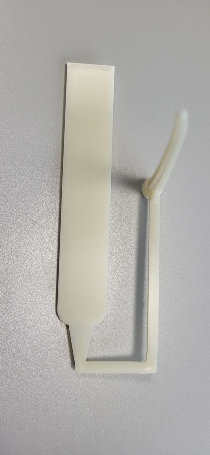
| Run | Parts | Material | Mold | What changes |
|---|---|---|---|---|
| 65 | 497 | ABS GP22 | plate | reference |
| 87 | 437 | ABS GP22 | plate | drying intervals |
| 88 | 498 | ABS GP35 | plate | material grade |
| 89 | 510 | PC/ABS T65XF | plate | polymer |
| 97 | 340 | ABS GP22 | ISO A bar | mold |
17 process variables per part: heating zones, pressures, times, cushion, ambient conditions.
Target: a binary quality label, derived from the drying of the material.
Paldino, Caelen, Oueslati, Ansay, Johanesa, Bontempi. PerCom Workshops, 2025, and Future Generation Computer Systems, 2026. Written during my PhD, within ARIAC by DigitalWallonia4.ai. Parts counted after cleaning.
What holds in every production is a candidate invariant mechanism, the kind that survives a domain shift.
Compared with all 17 variables, and with the 7 chosen by the process expert.
Averages over nearly 100,000 training runs: 2 models, 14 adaptation settings, 5 held-out productions.
A hard task and small differences: the twin is limited by how well we can find the graph.
About 60,000 simulated systems whose graph is known. The network learns what cause and effect look like in the data, instead of running hundreds of yes/no tests.
On new data it is a single pass: no tuning, no GPU, an answer in seconds.
The same weights serve 5 sensors or 1000. The other pretrained models stop at 5 to 12 variables.
TD2C: Paldino and Bontempi, International Journal of Forecasting, 2026. DTD2C: ongoing work, under review.
The classical methods first: each line stops where the method no longer finishes within 30 minutes.
Long and strongly autocorrelated: the correlation channels average about 29, against about 0 in training. The network extrapolates. On CausalTime a plain average of its own inputs (0.89) beats the network (0.67).
The tensor ignores the scale of the series, by design. But a downstream station carries more water: the ratio of the standard deviations alone reaches 0.76 on the flood network.
On NetSim the effects happen within one sampling step. We only look at lagged effects.
Next: statistics that do not blow up on long series, calibration without labels, same-time effects.
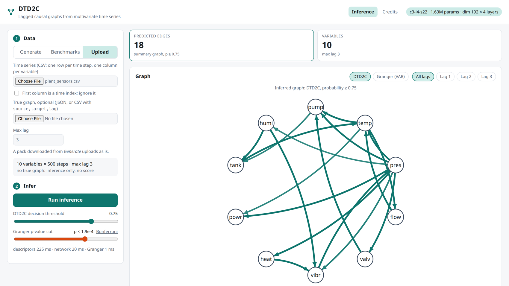
Input. One row per time step, one column per sensor.
Output. Every link with its delay and a probability. A slider sets how sure the model must be.
Speed. 10 sensors, 500 steps: a quarter of a second on a CPU.
Baseline. Granger causality runs next to it.
Prototype running at ULB. The file in the picture is a demo.
Sensor logs and time series: many variables, long histories, streaming or stored. The messier, the more realistic.
Someone who knows the process: which variables matter, what a fault looks like, which arrows cannot exist.
Designed experiments (DoE), logged changes of set-point, events tagged with their root cause, a known process diagram.
Methods for causal discovery, forecasting, anomaly detection and domain adaptation. The tool, the computing, and the time to write it up.
A first test on one of your datasets. Then a master thesis, a PhD, or a joint project, as we did in ARIAC.
Slides kept for the discussion.
Most data-driven twins live on the first rung. To climb, data are not enough: we need a causal graph. From physics when we have it, from the data when we do not.
Ladder of causation: Pearl and Mackenzie, The Book of Why, 2018.
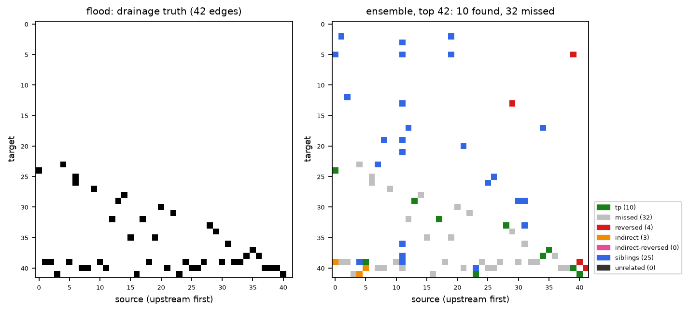
The 42 pairs the model scores highest against the 42 true edges: 10 are correct. Of the 32 mistakes, 25 link stations of the same basin on different branches, 4 are reversed and 3 point to an indirect ancestor. None links unrelated stations.
How much does X change Y?
Drying time: we knew that moisture was the confounder, and computed the effect of the drying time.
Output: a number (an effect).
What causes what?
Drying time: who told us that moisture comes before the choice of the drying time, and not after?
Output: a graph.
Until now we did inference, with a graph we took for granted. The rest of this talk is about discovery.
The spurious part travels along Drying time ← Moisture → Good part. Two ways to block it:
A coin decides the drying time: both groups get the same mix of dry and humid granulate.
What the second table did. Then average the rows: P(y \mid do(t)) = \sum_z P(y \mid t, z)\,P(z)
Same data, same parts. The ranking flips back.
Fit f(x) \approx E[Y \mid X = x], then plug in a new x that you observe.
Valid as long as the new case comes from the same world as the training data.
Now you set x yourself: E[Y \mid do(X = x)].
Plugging x into the same f is valid only if no spurious path between X and Y is left open.
The same regression, with the right covariates, averaged over the population.
Drying time: quality on drying time alone says short, by 6 points. Adding moisture says long, by 7.5 points.
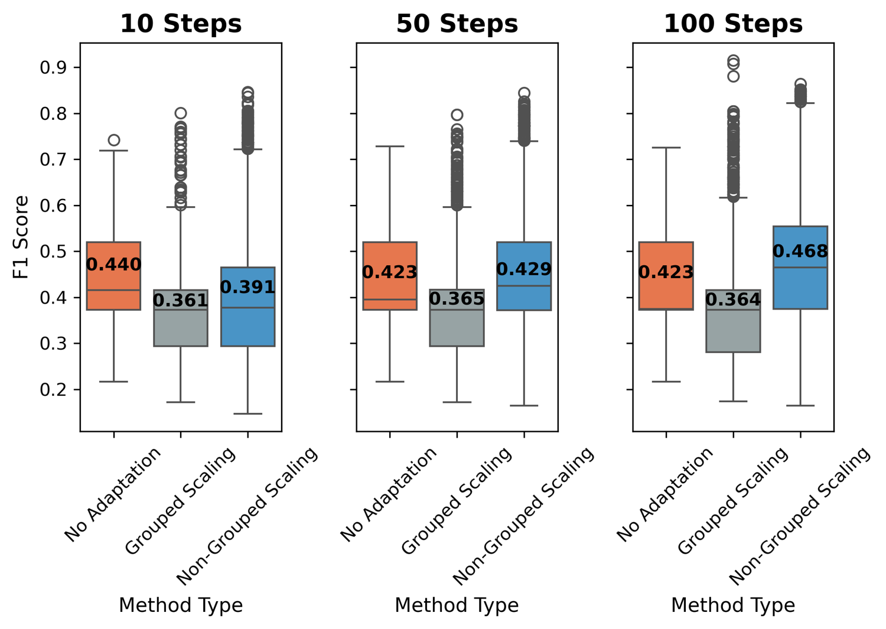
Grouped = each past production rescaled on its own. Always below no adaptation.
Non-grouped = the past productions rescaled as one. It catches up as more parts of the new production are seen (10, 50, 100).
Best single configuration: dynamic trend scaling with the expert variables, F1 0.459.
Friedman test over the 14 configurations: significant. Best adaptation vs none: not significant (p = 0.40).
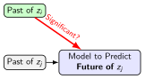
Time series z_i “Granger-causes" z_j if adding the past of z_i to a model using the past of z_j significantly improves the prediction of z_j’s future.
(1) Improving predictions \neq Causing (eg. ice cream sales, shark attacks).
(2) Mostly handles linear relationships (eg. VAR)
True Direction: x_1 \to x_2 x_2 = f(x_1) + \text{Noise}_2
Wrong Direction: x_2 \to x_1 x_1 = g(x_2) + \text{Noise}_1
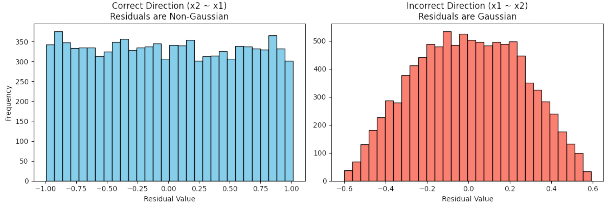
The noise of a true causal model should be statistically independent of the cause. Does not hold for the reverse direction.
Methods like VarLiNGAM (Hyvärinen et al., 2010) require the noise being non-Gaussian, and often assume linearity (VAR).
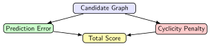
\underset{\mathbf{W}}{\operatorname{minimize}} \quad \underbrace{\frac{1}{2n} \|\mathbf{X} - \mathbf{XW}\|_F^2}_{\text{Data Fit (Least Squares)}} + \underbrace{\lambda h(\mathbf{W})}_{\text{Acyclicity Constraint}}
Frame causal discovery as an optimization problem. Search for the graph structure that best explains the data by minimizing a score function.
NOTEARS (Pamfil et al., 2020) assumes a linear model structure (Least Squares) and requires the graph to be acyclic.
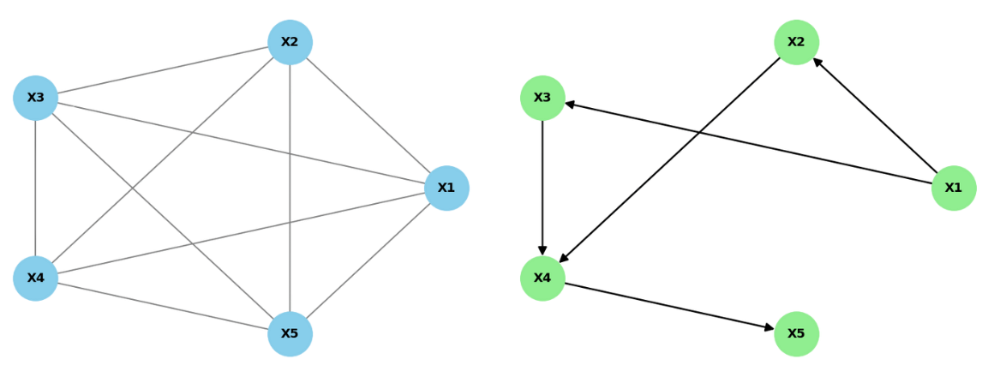
From a fully connected graph, we use Conditional Independence (CI) tests to remove links that are merely correlational.
Methods like PCMCI (Runge et al., 2019) heavily depend on the CI tests giving a clear “yes/no“ answer.
Parent of X \rightarrow X \rightarrow Y is a chain.
Given X, its parent says nothing more about Y: dependence = 0.
X \rightarrow Y \leftarrow Parent of Y is a collider.
Given Y, X and the other parent become dependent: dependence > 0.
Same measurement, roles swapped, different answer: an asymmetry that reveals the direction.
We do not know who the parents are, so we measure it for all the neighbours of X and Y and keep the whole distribution of values. These numbers are our descriptors.
Causal discovery is a highly imbalanced problem (many more non-causal links than causal ones), so we use F1-Score and Balanced Accuracy.
Friedman/Nemenyi statistical test (right is better). A black bar means statistically equal.
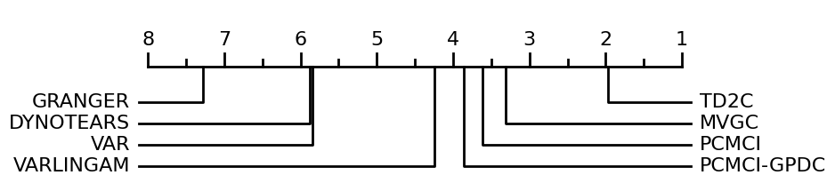
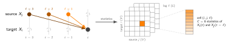
The target is taken at time t, the source \ell steps earlier.
Every (target, source, lag) triplet is a cell, holding 8 statistics computed over all time windows.
V variables and L lags give a tensor of V \times V \times L \times 8 numbers: the same format for a system of any size.
| Statistic | What it sees |
|---|---|
| Correlation | Linear association |
| Partial correlation given all the rest | What survives conditioning: the second Simpson table, for continuous data |
| The same two, on ranks | Nonlinear links, as long as they are monotone |
| HSIC (kernel independence) | Any dependence, even with no trend |
| Correlation ratio, in both directions | Not symmetric: a hint on the direction |
| Number of rows | How much to trust the others |
No Markov blanket to estimate, no nearest-neighbour mutual information: one matrix inversion gives every partial correlation at once.
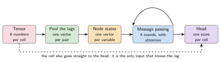
It works on the complete graph: one node per variable, one edge per ordered pair. The causal graph appears only at the output.
At each round, every variable collects messages from all the others, weighted by attention: once as a candidate effect, once as a candidate cause.
After 4 rounds, each variable knows something about the whole system.
| TD2C | DTD2C | |
|---|---|---|
| Training systems | 3,240 | 59,765 |
| Variables | 5 | 5 to 40 |
| Length | 250 steps | 60 to 2000 steps |
| Dynamics | 9 nonlinear autoregressive processes | linear, nonlinear, oscillators, and effects hidden from the mean |
| Graph shapes | random | random, hubs, trees |
| Model | random forest | message-passing network |
| Decision | one pair at a time | all cells jointly |
One trick: in half of the training steps the messages are switched off, so the network also learns to judge a cell without the rest of the system.
Limit of 30 minutes per system. PCMCI+ finishes nothing at 160 variables, TD2C one system in ten at 80.
AUROC on the six test benchmarks, never used for any choice:
| New sys. | Synth_230K | Kuramoto | Lorenz-96 | NetSim | Rivers | |
|---|---|---|---|---|---|---|
| PCMCI+ | .716 | .726 | .835 | .790 | .592 | .521 |
| Lasso-Granger | .714 | .729 | .975 | .884 | .715 | .584 |
| VAR-LiNGAM | .659 | .720 | .807 | .851 | .362 | .700 |
| DYNOTEARS | .732 | .742 | .744 | .836 | .549 | .557 |
| TD2C | .668 | .767 | .657 | .951 | .826 | .552 |
| DTD2C | .899 | .807 | .804 | .919 | .614 | .588 |
Best on two of six, and never fitted on any of them.
The aim is a pretrained model that is competitive without the limit on size, not the best method everywhere.
TD2C is still the best on two: its descriptors see things ours do not.
Same descriptors, same training data, same depth. The only change: every pair is scored on its own, with no messages. This is the TD2C regime.
AUROC. The bars start at 0.5, the level of chance.
The injection molding work was supported by Service Public de Wallonie Recherche, grant 2010235, ARIAC by DigitalWallonia4.ai. EDITS is funded by the F.R.S.-FNRS WEL-T programme.
Photos. Medicine bottle: Yinan Chen, public domain. Lawn sprinkler: Pixel.la, CC0 (all via Wikimedia Commons). Molded parts: from the FGCS paper, produced at Sirris.